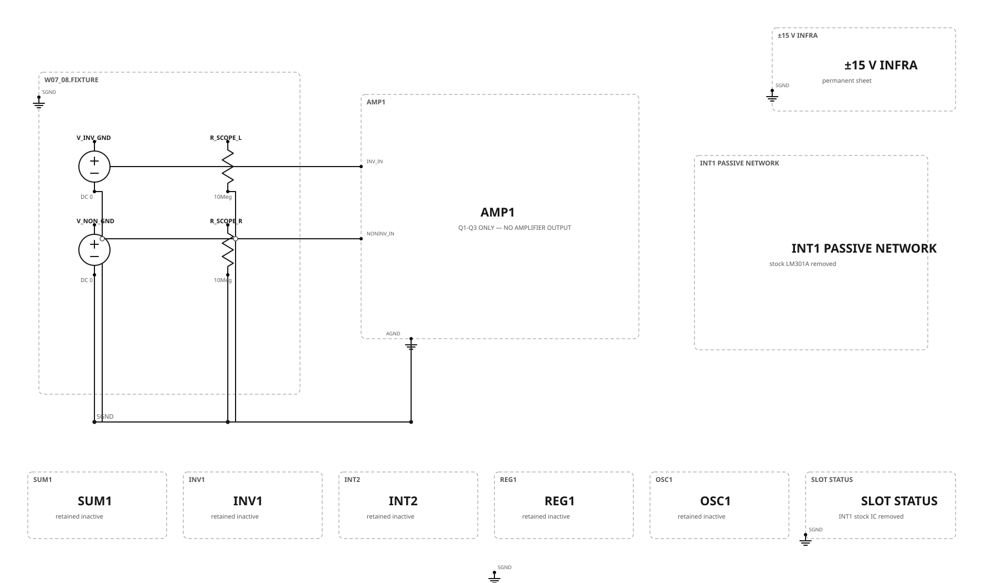
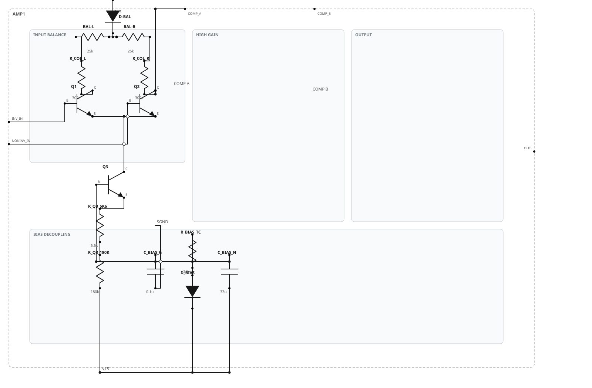
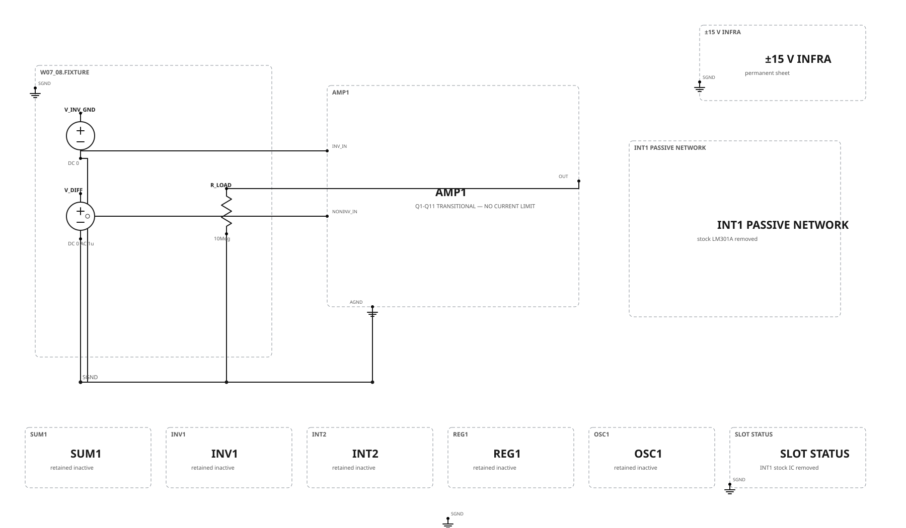
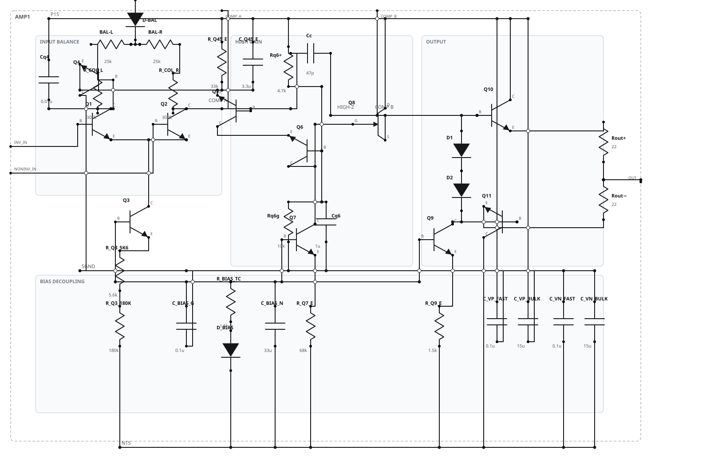
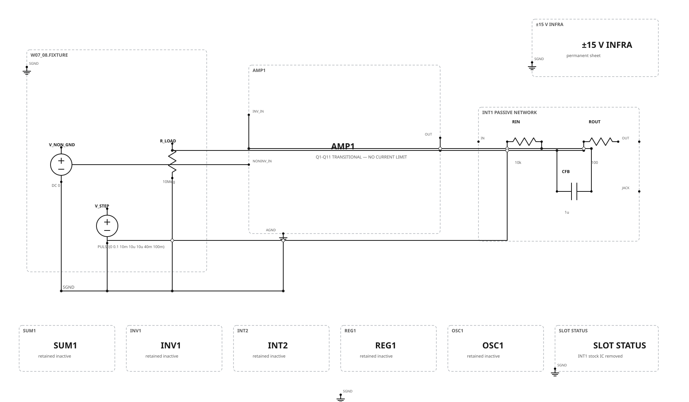

capstone.html. Their deliberately incomplete states remain historical weekly truths; the later combined functional result is documented in the final SPICE report.Week 7 · Input pair and tail source
The final 2N5963 Q1/Q2 matched pair, 2N3707 Q3 tail source, collector/balance network, and common-bias parts are installed. Equal 0 V base fixtures and 10 MΩ collector measurements support balance, offset, and drift observations.


| Item | Build state | Teaching use |
|---|---|---|
| Q1/Q2 | Matched 2N5963, thermally coupled | Collector balance and input-referred offset/drift |
| Q3 | 2N3707; final Figure 9.1 bias network | Target approximately 20 µA total tail current |
| Collector network | 300 kΩ each; 50 kΩ physical balance control represented as two 25 kΩ segments | Equal-VBE final trim |
| Temperature protocol | Proposed 25 / 35 / 45 °C points | Record pair temperature and re-zero voltage |
| INT1 | Stock IC removed; capacitor/output safely open | No integration acceptance test |
Week 8 · Transitional Q1–Q11 amplifier
Q4–Q11, the high-gain/current-source load, TIS58 buffer, two-diode output bias, complementary output devices, rail bypassing, and 22 Ω output resistors are added. A socketed 47 pF capacitor is a conservative proposed bring-up value—not a copied historical Week 8 value.



| Stage | Installed in Week 8 | Still absent |
|---|---|---|
| Input / gain | Q1–Q7 and final associated bias/passive network | Realistic mismatch/thermal validation |
| Buffer / output | Q8 TIS58, Q9 sink, Q10 2N2219, Q11 2N2905, two bias diodes, 22 Ω pair | Q12/Q13 current limiting |
| Compensation | Socketed 47 pF provisional Cc | Week 9 measured selection |
| Feedback | 10 kΩ / 1 µF only in INT1 bring-up configuration | Patch-cord drawing deferred |
Review decision
Approval accepts the exact Q1–Q3 → Q1–Q11 → Q1–Q13 progression and the explicit incomplete/safety labels. It does not claim realistic semiconductor performance and does not insert these sheets into the capstone.
Next after approval: reconcile this frozen Week 8 subset with the already reviewed Week 9 vertical proof, regenerate Week 9 from the cumulative Weeks 0–8 authority, and then proceed to Weeks 10–11.
Canonical authority: Weeks 7–8 graph. Cases: manifest. Decisions: production record. Deferred modern project: separate low-voltage redesign.